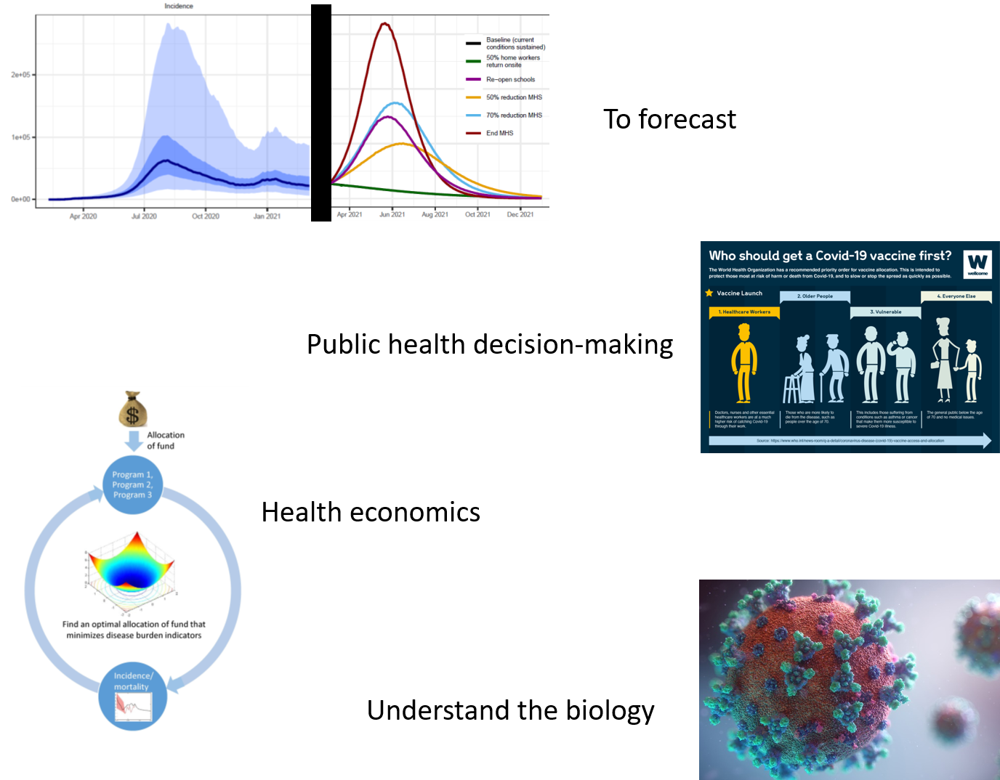
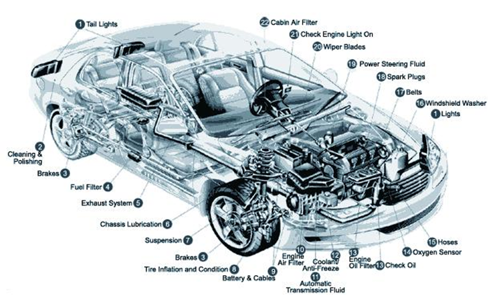
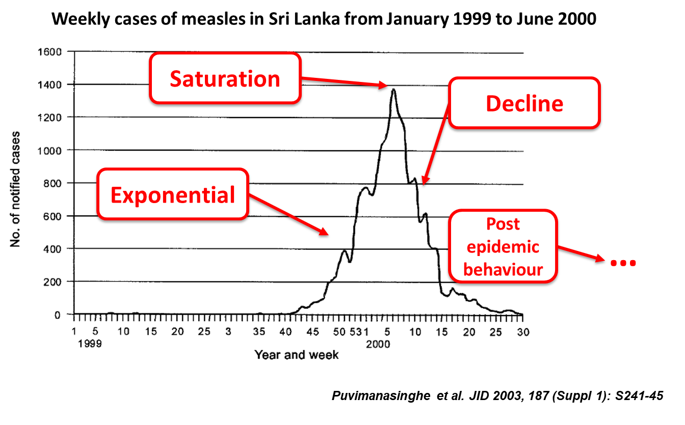
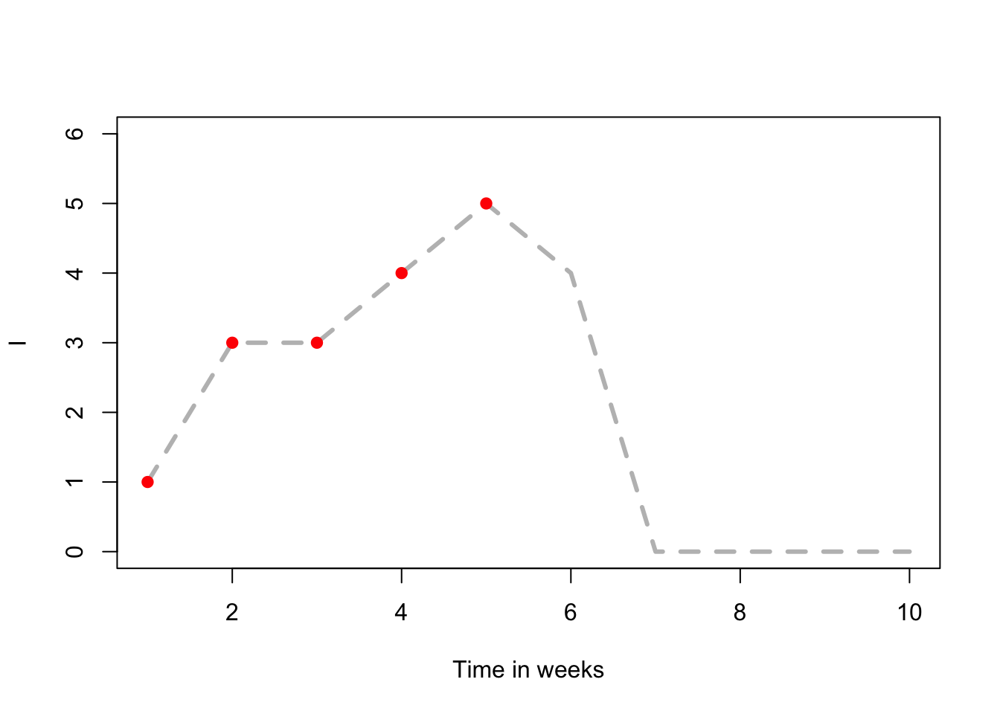
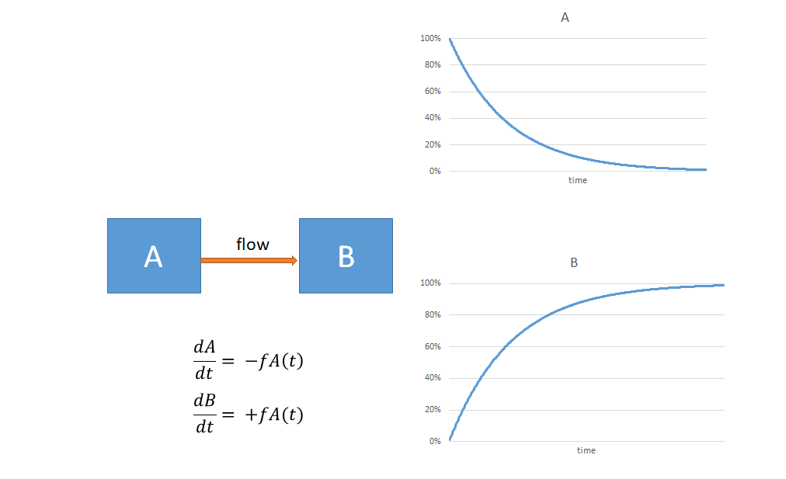
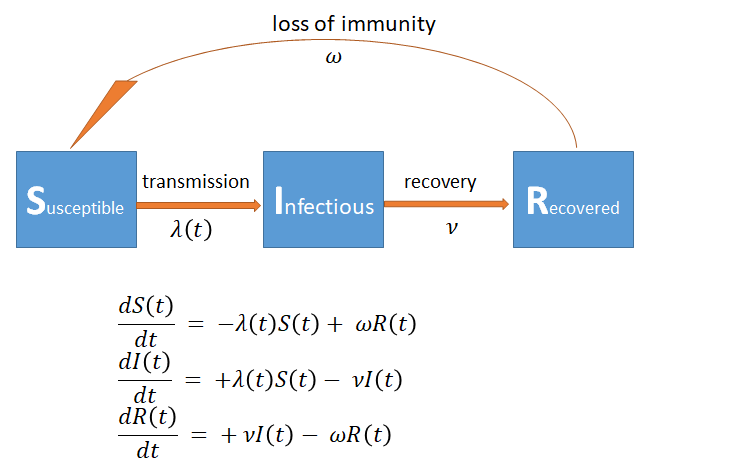
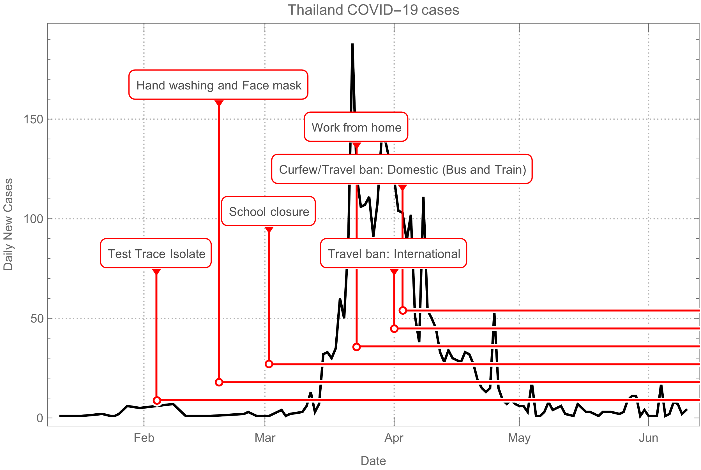

# Mathematical Modelling of Infectious Diseases
###################################################
## INTRODUCTION TO MATHEMATICAL MODELLING PRACTICAL SESSION##
###################################################
# Record and plot simulated epidemics
# create a matrix to store experimental results
result <- matrix(NA,nrow=10,ncol=5)
# weeks
result[,1]<-1:10 # weeks
# replace with your S count for each week
result[,2]<-c(19, 17, 13, 9, 5, 2, 1, 1, 1, 1) # S
# replace with your I count for each week
result[,3]<-c(1, 2, 4, 4, 4, 3, 1, 0, 0, 0) # I
# replace with your R count for each week
result[,4]<-c(0, 1, 3, 7, 11, 15, 18, 19, 19, 19) # RIntroduction to Mathematical Modelling
SPARKLE short course ‘Mathematical Modelling of Infectious Diseases’
Presenter: Emma McBryde, Australian Institute of Tropical Health & Medicine, James Cook University
Summary
This is an interactive session to introduce the basic concepts of mathematical modelling of infectious diseases. The SIRS model will be derived and explained. Typical epidemiological measures such as prevalence, incidence and the basic reproduction number will be explored. Types of transmission dynamic models will be compared.
This session is divided into three parts:
Part 1 covers:
- Brief introduction to the module
- First practical session
Part 2 covers:
- Explanation of the dynamic relationships between the changing numbers of susceptible (S), infectious (I), and recovered (R) individuals
- Introduction to key definitions
- Introduction to compartmental modelling
Part 3 covers:
- Development of the running example model for the module which will be revisited in multiple subsequent sessions
- Review of selected biological information to derive an appropriate model structure
- Further review of the information will guide participants to extract essential parameter values
We recommend to save your text at the end of each part by printing the file.
Introduction
What is a model?
- A simplified description of a system or process used to aid understanding
- A model is useful if it provides relevant (and correct) information for a particular purpose/question
- A model is efficient if it will do this with minimal inputs and without providing superfluous information
- Map example: https://www.thetruesize.com/
Why use mathematical models?

Types of infectious disease model
Covered in this course:
- Mechanistic models
- Describe the biological mechanism in mathematical language
- Can reproduce previous trends and also predict future impacts of interventions
Not covered in this course:
- Economic models
- Focus on the cost specific disease burden and control
- Assess the cost-effectiveness of competing interventions
- Bioinformatics
- Mainly for the analysis and interpretation of genetic data
- Statistical models
- Data-driven and describe historical trends and relationships such as auto-regressive models
- Spatial models (though they will be discussed briefly)
- Focus on spatially heterogeneous systems
There are many examples of hybrid models that span several of these categories.
Model Complexity - or not!
- Models should be formulated based on understanding of disease mechanisms, available information and policy questions
- Models should be as simple as possible, but no simpler 
- Some models are simple but useful
- The more functions a model performs, the more complex it becomes
- Faster processing speed, new methods and technology allow for more complexity
- but this is not always superior
Advice: start simple and build
Part 1: Our first model
Summary
This is a practical session in which, individually or as part of a group, you will simulate an epidemic using some simple apparatus. The objective of this exercise is to simulate and graphically illustrate the SIR compartmental model.
Materials
- Three types of beans of a similar size but different colours, 20 of each type
- An A4 piece of paper, folded in quarters in concertina style
- One cup

Instructions
- Assign a state for each type of bean:
| State variable | Colour of Bean |
|---|---|
| Susceptible (S) | |
| Infectious (I) | |
| Recovered (R) |
- Each time step is one week. For the first time step, place 19 susceptible beans in the cup along with one infectious bean. Pour the beans in a line on your folded paper. Record your result in the table below for week 1. Check that your total population, P, remains at 20 throughout the experiment.
| Week | S | I | R | P |
|---|---|---|---|---|
| 1 | ||||
| 2 | ||||
| 3 | ||||
| 4 | ||||
| 5 | ||||
| 6 | ||||
| 7 | ||||
| 8 | ||||
| 9 | ||||
| 10 |
The infectious bean can infect susceptible neighbours so replace any susceptible neighbours with infectious beans. The infectious period is one week, so keep track of the original infected bean and replace it with a recovered bean. Record the numbers of susceptible, infectious and recovered individuals in the table above for week 2.
Once the status of the individuals has been updated, place the beans in the cup. Then pour them out again. Replace all susceptible neighbours of infectious beans with new infectious beans (recovered beans are immune and cannot be infected). Don’t forget to replace the original infected beans with recovered beans. Record the numbers of susceptible, infectious and recovered individuals in the table above for week 3.
Repeat until you reach 10 weeks.
Recording results in R
Here is some code to record and plot your results in R. Open RStudio, open from your student files folder “session1_introduction_beans.R”. Using the Session tab, Set Working Directory / To Source File Location. Copy and paste the code chunk below into your editor. Then replace the default results with your own.
Checking results in R
- Write a line of R code to calculate the sum
S+I+Rfor each week and assign this to column 5 of the results matrix. - Type
result[, 5]in your console. What do you see and why?
Plotting results in R
Copy and paste the code chunk below into your editor to plot your results:
library(ggplot2)
ggplot() +
geom_point(aes(x=result[, 1], y=result[, 3]), colour="red") +
ggtitle("My simulated epidemic") +
labs(x="Time in weeks", y="I")
- How does your result differ from the above plot?
- Why would we expect a different result if we did the bean counting experiment again?
https://robmoss.github.io/sir-demo/
Part 2: Compartmental Models
Summary
This will be an interactive lecture session to familiarise you with some of the theory and methods for compartmental modelling. Notes appear below for your reference with a few questions thrown in.
The characteristic epidemic curve
- 4 regions: Exponential; Saturation; Decline; Post epidemic behaviour 
Thinking like a mathematical modeller
- What are the mechanistic reasons for the shape?

The basic reproduction number, \(R_0\)
\(R_0\) is defined as the average number of new infections that result from a single infection introduced into a totally susceptible population. This will depend on:
- The number of contacts per unit time (e.g. week\(^{-1}\)), \(c\)
- The probability of infection given a contact between an infectious and a susceptible individual, \(p\)
- The duration of infection, \(D\)
The equation for the basic reproduction number is \[R_0=pcD.\] The product, \(pc\), can be replaced by the single parameter, \(\beta\), defined as the effective contact rate per unit time.
Estimating \(R_0\) from your simulation experiment
- For \(D\), what were the value and units for the duration of infection?
- For \(p\), what was the probability of an infected individual (bean) infecting a susceptible neighbour?
- For \(c\), what was the average number of contacts for each individual?
Tip
Don’t forget either end of the line!
- Explain why the basic reproduction number is 1.9.
Saturation
Not all contacts are with susceptible individuals: 
Some theory
- The effective reproduction number \(R_t\) is defined as the average number of new infections caused by an infected individual at any stage during the epidemic when there will be both susceptible and recovered (thus immune) individuals present
- \(R_t=R_0 x^∗\) varies over time depending on the fraction of the population susceptible, \(x^∗=\left(\frac{S}{pop}\right)\)
- Incidence of infections increases when \(R_t>1\) and declines when \(R_t<1\). Thus the critical proportion susceptible, \(x^∗\), can be calculated for \(R_t=1\): \[R_t=1\Rightarrow R_0x^∗=1 \Rightarrow x^∗=\frac{1}{R_0}\]
Implications for vaccination
- Critical proportion immune or the herd immunity threshold: \[HIT = 1-x^* \Rightarrow HIT = 1 - \frac{1}{R_0}\]
- Using the HIT formula, explain why a target vaccination coverage of over 50% would be sufficient to control the spread of infection in your simulated epidemic.
- If the target coverage for a particular vaccine is 90%, what can you infer about the \(R_0\) of the pathogen in question?
Building models
To design your own mathematical model you must understand
- The research question
- The natural history of the infection
- What data are available
You will learn to
- Write the model in the form of ordinary differential equations (ODEs)
- Run the model using suitable software
You will use your model, for example to predict the effect of interventions
Compartmental models
- Each box (compartment, state) has an equation
- Each arrow (flow) has a rate 
Example: The SIRS model
- Has three states so has three equations
- The rate at which susceptible individuals become infected is special because it depends on the proportion of the population that is infected at each time \(I(t)\)
- We define the force of infection, \(\lambda(t) = \beta I(t)/N\), where \(N=S(t)+I(t)+R(t)\) is the total population size. 
Some definitions
A parameter is a constant value used in the model which usually has some biological significance. For example 1/(the duration of infection) is a parameter (\(\nu\))
- What is the name of another model parameter and it’s meaning?
A variable is a value in the model that can change over time. All the states are known as state variables for this reason
- What is the name of a model variable which is not a state variable?
Prevalence is the proportion or percentage of the population infected at any time
- What is the formula for prevalence in terms of the model states and parameters?
Incidence is the number of new cases per unit time and is given by the rate into the infected compartment \[\text{incidence} = \lambda(t)S(t)\]
Model assumptions
- All models have assumptions, so what does the example SIRS model assume?
- Deterministic dynamics
- No role for chance, model is ‘predetermined’
- Population is stratified in broad groups (i.e. compartments). Within each compartment, individuals are homogeneous
- What does this mean?
- Homogeneous mixing
- What does this mean?
- Dynamic transmission
- What does this mean?
Tip
Think special rates
- Closed population
- What does this mean?
Common model structures

- Suggest a suitable infectious disease for each of the common model structures listed below.
| Model Structure | Suitable Infectious Disease |
|---|---|
| SI | |
| SIS | |
| SIR | |
| SIRS | |
| SEIR | |
| SEIRS |
Part 3: A model for COVID-19 transmission
Building a compartmental model: the problem for the week
We will write a suitable model structure for COVID-19 and search the literature for data to inform parameter values and for model comparison.
Examine the figure below and discuss amongst the group or search trusted sources to assist your answer. 
- What is the most suitable structure for a COVID-19 transmission model (SI, SIS, SIR, SIRS, SEIR, SEIRS or other)?
- Describe of sketch a diagram of the model structure. Include information about the compartments and the flows.
Model diagram
Instructions
- You can draw a diagram electronically in a program such as PowerPoint, or you can draw your diagram by hand and take a photo
- Save your diagram in one of the following formats: .jpg, .gif, .png
- Upload your diagram using the Choose Files button below
Upload your image
- It is good practice to start with a simple model, that is, a model with many simplifying assumptions which means it is not very realistic. How would you change the model to make it more realistic? i.e. Is this the simplest model possible to understand the time course of an outbreak? Is this sufficiently complex to capture the key features needed to answer the question(s)?
Refer to the chart of confirmed COVID cases in Thailand superimposed with interventions: 
- What questions would a policy-maker be asking in this scenario? Comment on if and how a model could be used to answer each policy question.
Good things to think about when modelling:
How sensitive are the outputs of interest to the model parameters?
– Use sensitivity analyses, such as partial rank correlation coefficient
What are the parameter values and ranges for the data? How well do we know them?
– Bayesian inference; or if want quick and not-as-good calibration, can use a least squared error approach
What are the resulting dynamics of the model?
– Plots, summary statistics, phase plane analysis, stability analysis, bifurcation analysis, etc.
Contributors
- Lisa White, Nuffield Department of Medicine, Oxford University
- Wirichada Pan-Ngum, Department of Tropical Hygiene, Faculty of Tropical Medicine, Mahidol University
- Emma McBryde, Australian Institute of Tropical Health & Medicine, James Cook University